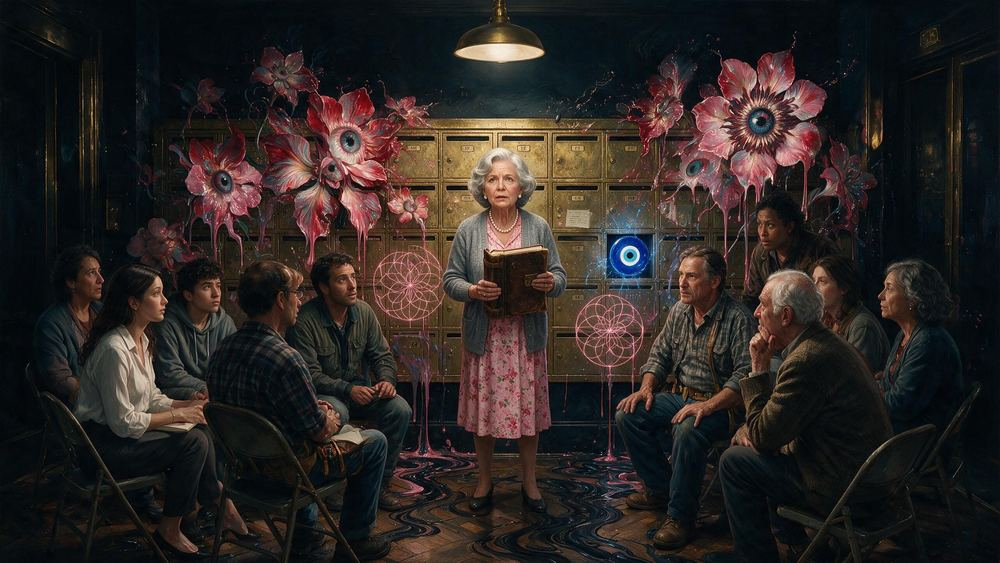
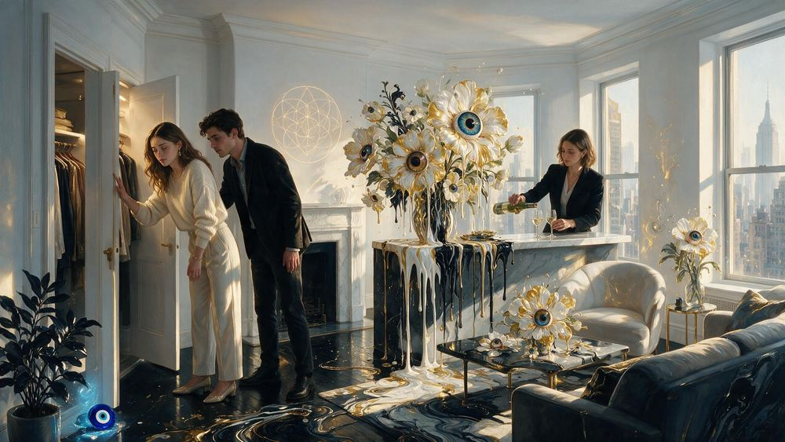
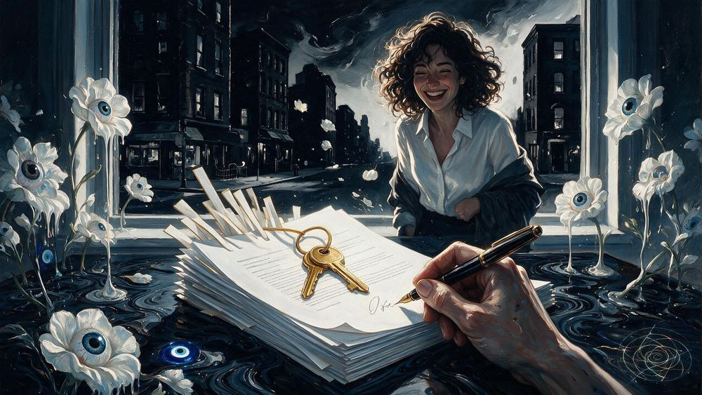
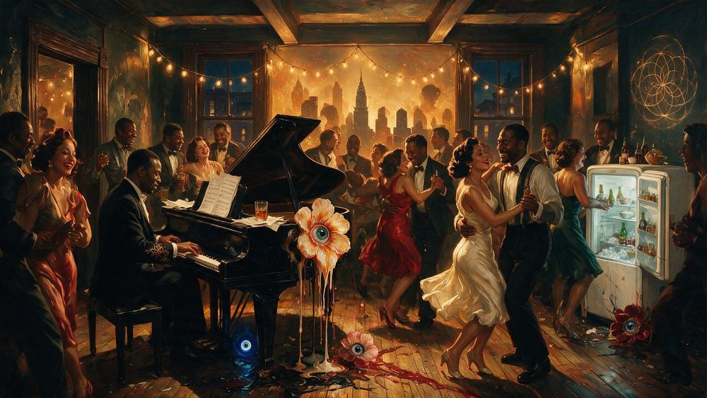
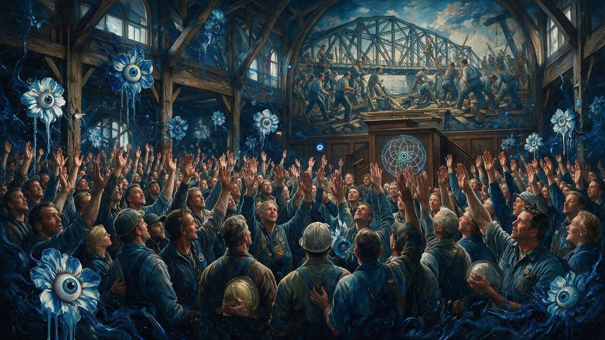
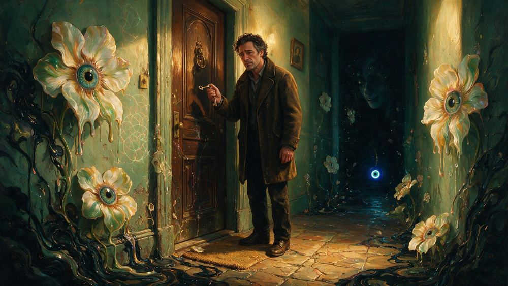
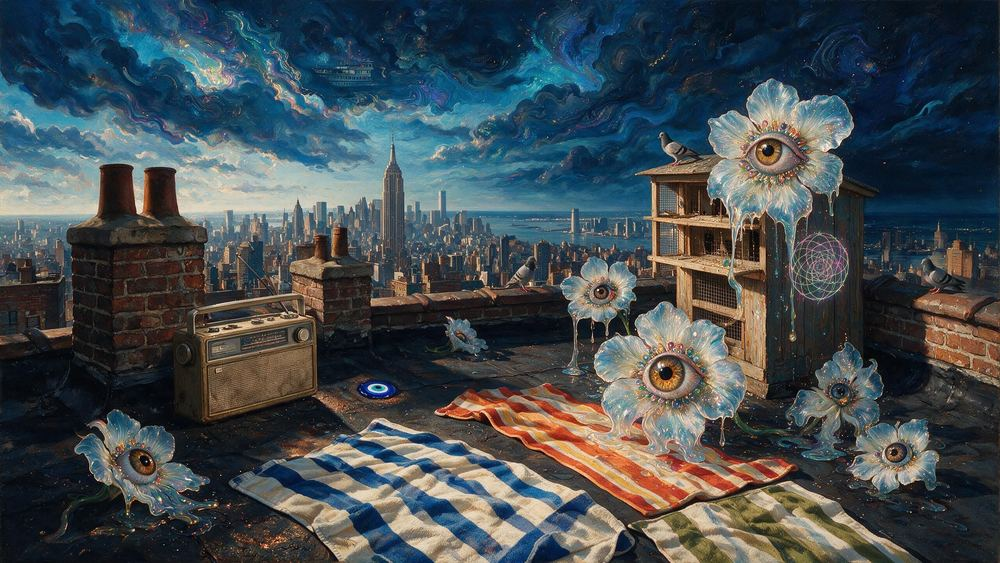
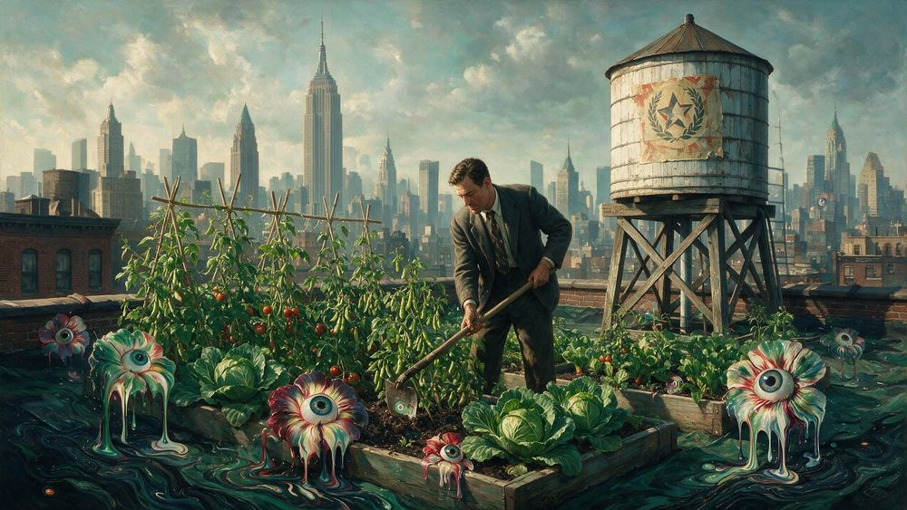

NEW YORKERS No. 791 · Upper West Side
The Rent Stabilized Lifer
Fifty years in the same sun drenched pre war and the lease outlives every landlord. She waters her plants and every plant watches back
NEW YORKERS BY MLOW
58 New Yorkers by MLow. No piece disappears from this list, whatever happens upstairs.
NEW YORKERS No. 791 · Upper West Side
Fifty years in the same sun drenched pre war and the lease outlives every landlord. She waters her plants and every plant watches back
NEW YORKERS No. 888 · Bushwick
It slides under the door glowing radioactive green. The percentage reads as a scream of color, and the hallway flowers wilt on sight
NEW YORKERS No. 47 · Flushing Meadows
The lease ran out and so did the tenant's luck. The skeleton in the Mets cap, the sign, the papers loose on the bridge
NEW YORKERS No. 5413 · Bushwick
Two hundred neighbours, arm in arm, entirely calm, in front of one door. Bushwick, and the family in the window above watching the block hold
NEW YORKERS No. 39 · Bedford-Stuyvesant
He holds every key and decides who stays the winter. The ring of keys, the notices in the wind, the figure over the block
NEW YORKERS No. 43 · Washington Heights
Another key, another notice, another winter decided upstairs. The papers, the night city, the landlord the block never sees
NEW YORKERS No. 819 · Manhattan
She paints the whole skyline on a single fingernail without breathing. Rows of glowing polish, steady hands, Manhattan at its smallest
NEW YORKERS No. 985 · Tribeca
Pastels flying in the gallery where no cameras are allowed. Her sketchboard blooms with a portrait more alive than the room it happened in
NEW YORKERS No. 577 · Midtown
The party of the century decided at the door who deserved it. The velvet rope, the disco, the two years everyone claims they made
NEW YORKERS No. 984 · Chelsea
Second floor, warm light, silhouettes mid leap above the street. The sidewalk crowd pauses below, getting the best show in town for free
NEW YORKERS No. 3338 · East Williamsburg
They walk out at six visibly different from who walked in. A warehouse door, morning light, a hundred people blinking on the sidewalk
NEW YORKERS No. 5302 · Bronx
Machines in the Bronx refuse to run unless she is present. No engineer can explain it, and she walks the aisles anyway
NEW YORKERS No. 1408 · SoHo
Twelve foot canvases, a bathtub by the freight elevator, an illegal woodstove. The neighborhood's whole future being painted at 2am
NEW YORKERS No. 1401 · West Village
Invitation only, a turntablist blending records like a chemist. Balloons and a mirror ball over a floor where everyone is welcome and everyone is beautiful
NEW YORKERS No. 1255 · Long Island City
The warehouse opens its studios to the night crowd, wine in plastic cups among wet canvases. One painter explains a twelve foot canvas to a rapt plumber, and both belong
NEW YORKERS No. 3640 · Ridgewood
The curator almost did not come and every canvas turned. Ridgewood studio, late window light going orange, unfinished work facing one door
NEW YORKERS No. 1865 · Williamsburg
At dawn on a rooftop the eye flowers bloom off the wet canvas into the real skyline. Every character faintly visible in the clouds, one blue evil eye signed into the corner
NEW YORKERS No. 2275 · Bushwick
The canvas is stretched, the brushes are standing at attention, and era eight is officially primed. The bud pushing through from inside did not ask permission
NEW YORKERS No. 3170 · Bushwick
He turned around and a crowd had assembled behind him. The Painter of New Yorkers, a Bushwick corner, a brass watering can at his feet
NEW YORKERS No. 1022 · Chelsea
A room of black turtlenecks studies the free wine harder than the art. One enormous canvas of pure color judges them right back
NEW YORKERS No. 785 · Park Slope
Everything must go except her spot on the stoop. Leopard coat, cash box on her lap, vinyl priced by how much she likes you
NEW YORKERS No. 937 · Harlem
A folding chair, a caped neighbor, and a shape up sharp enough to argue with. The line waits on the stoop, the mirror propped on the railing

NEW YORKERS No. 1209 · Highbridge
Folding chairs in a circle under the mailboxes, tenants from every floor. One grandmother stands with the rent ledger like a sword, and resolve hardens in the room
NEW YORKERS No. 4388 · SoHo
Every tenant since eighteen seventy is still faintly in the room. Sewing girls and sculptors and a disgraced senator reading over her shoulder, applauding silently at the good lines
NEW YORKERS No. 42 · Brooklyn
He opens a four-dollar coffee and the rent doubles behind him. The new cafe, the priced-out block, the change nobody on it voted for

NEW YORKERS No. 1432 · Williamsburg
They tour an apartment they cannot afford as weekend theater. Connoisseur nods at the closets, the broker pouring the wine anyway

NEW YORKERS No. 1732 · Astoria
Forty seven pages signed with a trembling pen, the keys sliding across the table like communion. The new tenant floats out onto a street that is suddenly hers
NEW YORKERS No. 3184 · Hell's Kitchen
He slid the sheet across with a smile he has practiced. She did the arithmetic, hated the number, and took the apartment anyway
NEW YORKERS No. 2666 · Murray Hill
The mythical creature who earns eighty times the rent signs with a fountain pen of judgment. The most demanded and least seen of the city's saints, and the devil gets his number
NEW YORKERS No. 1740 · Chelsea
The red dot goes up beside the painting while its maker pretends to study a different wall. Rent makes a sound like a bell being unrung
NEW YORKERS No. 30 · Chelsea
He eats lunch on a beam the skyline hangs from. The hard hat, the girder, the tower he builds and never owns

NEW YORKERS No. 830 · Manhattan
Between two tenements she grew a country. Casita flag flying, tomatoes and collards thriving, every bloom in the garden keeping watch
NEW YORKERS No. 1321 · East New York
Saddlebags full of pollen, working the sunflowers in golden hour. A kid with a magnifying glass at respectful distance, the tomatoes owe her everything
NEW YORKERS No. 40 · Manhattan
He unlocks a door you found yourself and charges you a month for it. The listing, the fee, the gatekeeper standing between you and a lease
NEW YORKERS No. 864 · Lower East Side
Under three golden orbs he appraises a trumpet without a flicker. Guitars and fur coats hanging like museum pieces, every object a former dream
NEW YORKERS No. 4865 · Crown Heights
A barbershop mirror shows the block instead of the customer, forty years deep. You sit down for a fade and watch the storefronts change and change back, chair doing the work

NEW YORKERS No. 1955 · Harlem
Piano thundering, a quarter at the door, the icebox emptied and the rent made by 2am. Hardship danced into legend
NEW YORKERS No. 3430 · Upper East Side
She has watered these plants since nineteen sixty two. A Yorkville window, a rent line nobody can move, a building built around her
NEW YORKERS No. 1635 · Inwood
The granddaughter receives the keys to the 1976 lease and her grandmother's plants lean toward her in approval. The new queen promises the radiator and the fire escape garden that nothing will change
NEW YORKERS No. 989 · Park Slope
Hour four in the fluorescent basement and a speaker is defending a tree at the mic. Folding chairs, raised hands, democracy by attrition
NEW YORKERS No. 3316 · Clinton Hill
Ninety minutes of arguing ends in a unanimous vote to dig. A church basement, nine neighbors, one tree pit nobody will abandon now

NEW YORKERS No. 2379 · Woodside
The hands go up together under the mural of the bridge their grandfathers built. Hard hats held to chests like hymnals, and the vote carries
NEW YORKERS No. 3885 · Sunset Park
Every family the building ever held is written in the same ledger. A boiler room, one caged bulb, handwriting stacked on handwriting for ninety years
NEW YORKERS No. 1075 · Bushwick
Band and crowd indistinguishable under one bare bulb swinging to the tempo. The pipes sweat, the amps bloom, Bushwick holds
NEW YORKERS No. 3935 · Sunnyside Yards
He could not climb it, so the scaffold climbed for him. Brick going up forever, an enormous evening sky, the highest wall of his life
NEW YORKERS No. 1540 · Harlem
Every building has the bricked doorway in the basement wall, warm light bleeding through the mortar. The super touches it like a healed wound, and whatever is behind it politely keeps to itself

NEW YORKERS No. 1749 · East Village
Years later the old key still works, and the former tenant stands in the vestibule breathing the unchanged hallway. Not going up, just knowing, leaving the key under the mat for the building to keep
NEW YORKERS No. 3348 · Bushwick
They measure the rooms and split the rent honestly, which is rare. A Bushwick living room floor, a tape measure, three signatures
NEW YORKERS No. 3426 · Flatbush
He shows up on a Sunday with a wrench and nobody believes it. A basement boiler, tenants in the doorway, heat by evening
NEW YORKERS No. 787 · Washington Heights
He holds the keys to every apartment and the secrets of every pipe. Find him in the boiler room, already fixing what you were about to report
NEW YORKERS No. 4913 · Sunset Park
Forty women found a lost child in eleven minutes and organised a funeral in twenty. Sunset Park, no institution in the city moves that fast, and none of them call it organising
NEW YORKERS No. 805 · Midtown
The sidewalk shed outlived the reason it went up. He lounges on a plywood throne beneath it, decades of permits pinned like trophies

NEW YORKERS No. 2162 · Brownsville
The rooftop as the block's private riviera, towels on hot tar and a radio between chimneys. Pigeon coops for cabanas, the skyline for an ocean view

NEW YORKERS No. 2142 · Carroll Gardens
Ten thousand irises across a warehouse roof, all facing the sunrise in unison. The sigil writer's largest work, signed in one neon line in the corner
NEW YORKERS No. 3820 · East Village
A padlock opened for the woman who kept that lot for twenty years. An East Village fence, tomato vines going wild, a lease that changed hands

NEW YORKERS No. 1777 · Midtown
Office workers hoed beans in ties on a wartime rooftop while the skyline stood guard over cabbages. The home front measured in tomatoes
NEW YORKERS No. 3943 · Bushwick
Five boroughs of machines came up to a roof for the sunset. Bushwick at dusk, water towers in silhouette, nothing on the agenda but light
NEW YORKERS No. 2990 · Chinatown
On a Chinatown rooftop the crowned Squab signs the Peace of the Rooftops beside the tiny crowned rat, one wing print and one paw print pressed in petal ink. Both courts cheer, and the bagel rights hold